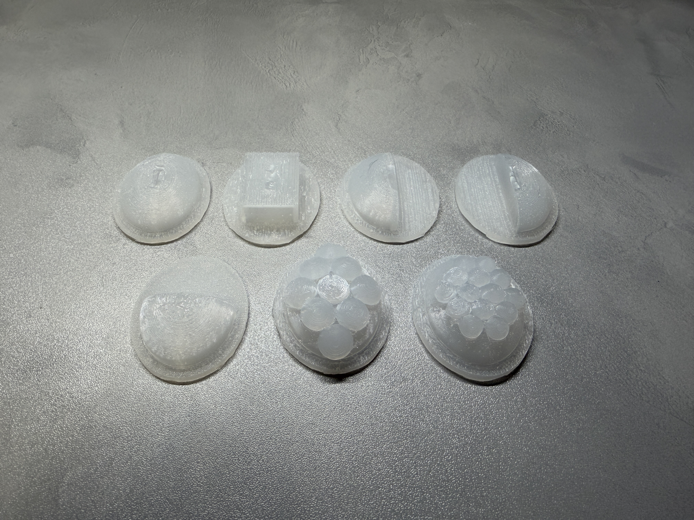
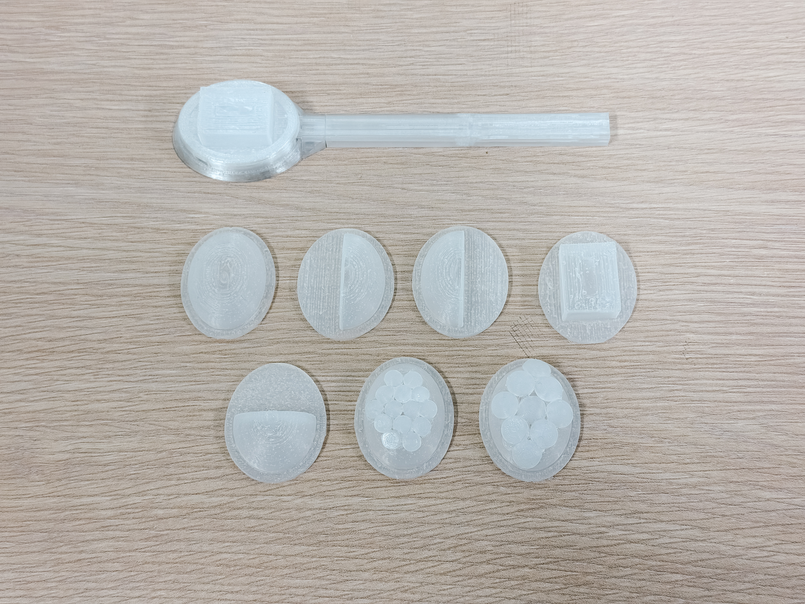
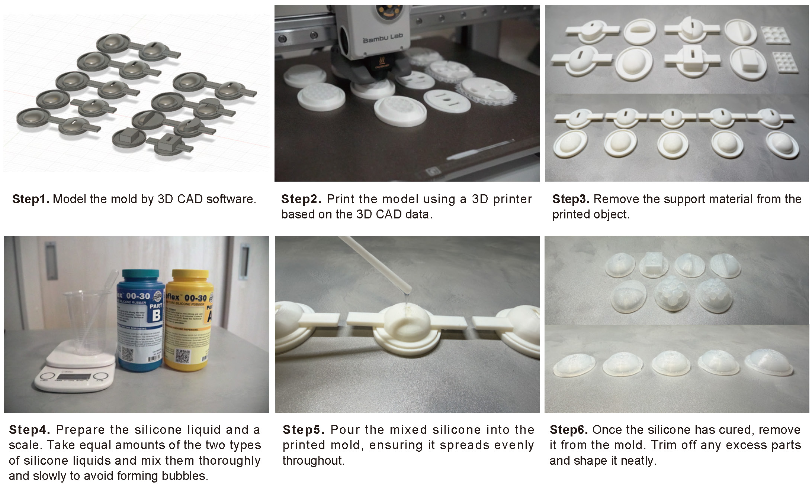
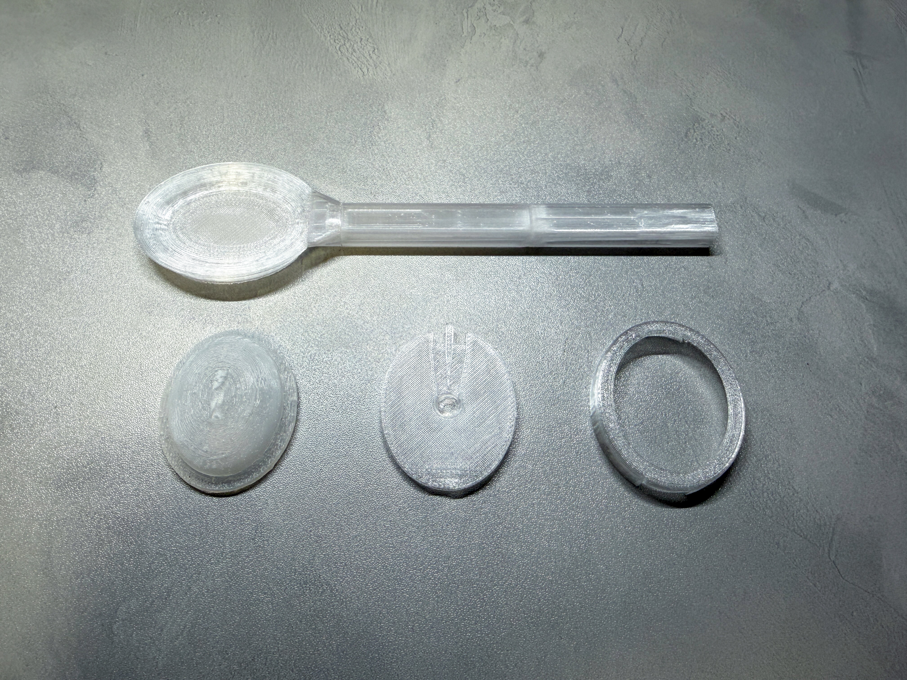
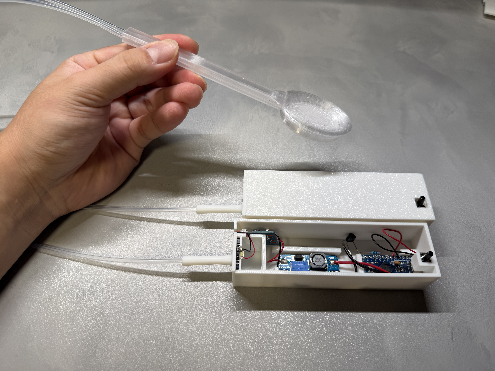
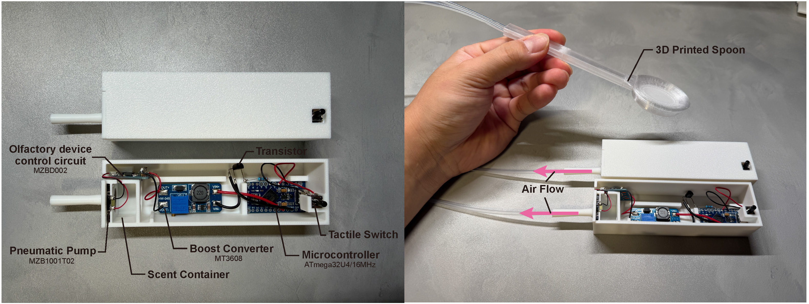
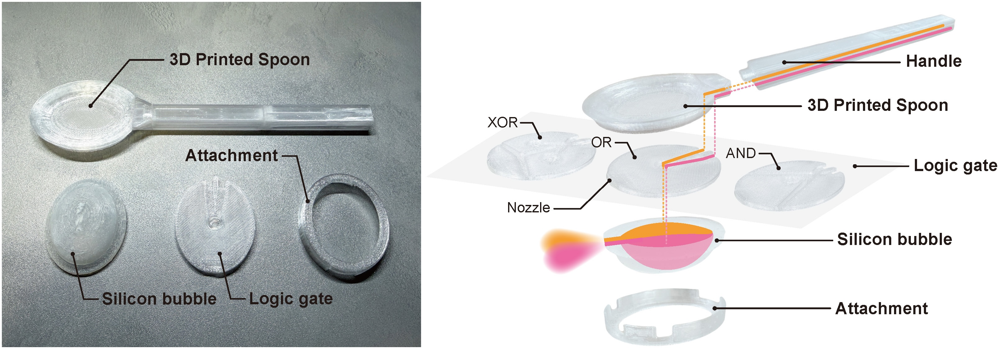
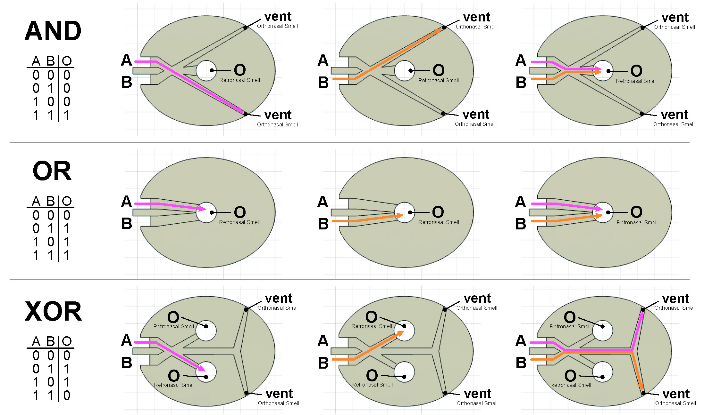
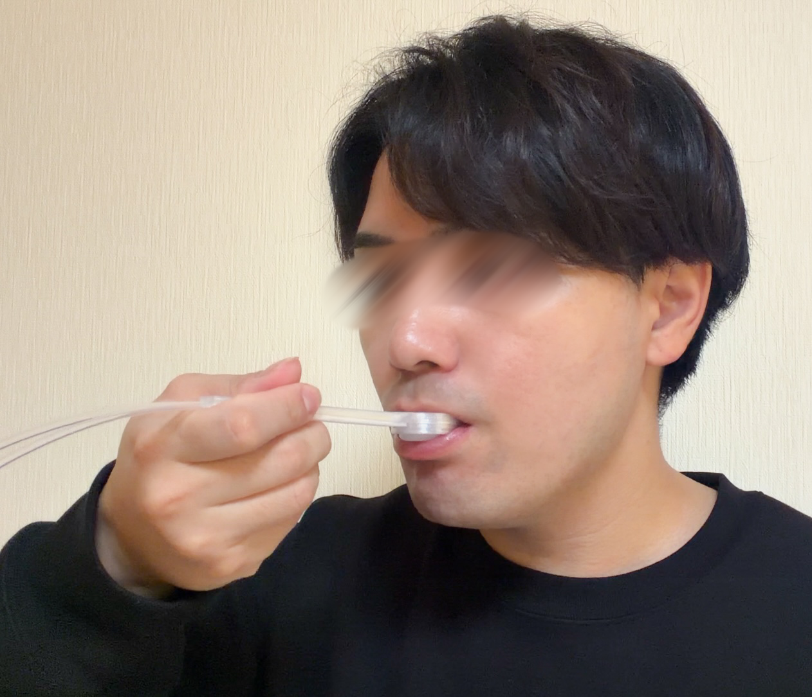

PneuSpoon
Human-Computer Interaction / Human-Food Interaction / Olfactory Interface
Eating is a multisensory experience that integrates taste, smell, vision, and touch. Among these, retronasal smell—the aroma perceived through the mouth—plays a crucial role in flavor perception and preference formation. However, synchronizing scent presentation with dynamic eating behaviors such as chewing and swallowing remains challenging due to the difficulty of precisely controlling airflow. This paper presents PneuSpoon, a pneumatically actuated spoon-shaped device that delivers scent directly into the oral cavity on a bite-by-bite basis. The device stores scent inside a silicone balloon beneath the spoon before eating; when the user brings the spoon to the mouth and the balloon is gently compressed, the stored scent is released in synchrony with eating. A pneumatic circuit inspired by fluidic logic enables switching and mixing of multiple scents for controlled presentation. Through a formative design exploration, we identified design parameters—such as balloon shape and depth—that balance tactile comfort and scent intensity. Building on these insights, a controlled user study with real food demonstrated that retronasal smell presentation increased taste satisfaction by 25%, confirming that taste perception can be modulated through this approach. Finally, this work proposes a framework for designing and controlling the inherently environmental sense of smell from the artifact side, extending the Ubiquitous Computing vision of ''computation that blends into the environment'' into the domain of multisensory flavor experiences.










- PneuSpoon: Designing a Pneumatic Olfactory Spoon for Retronasal Flavor Augmentation during Eating